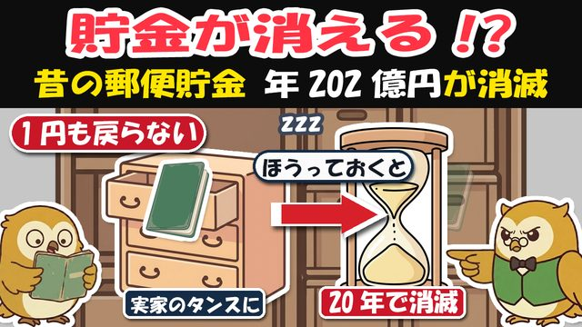
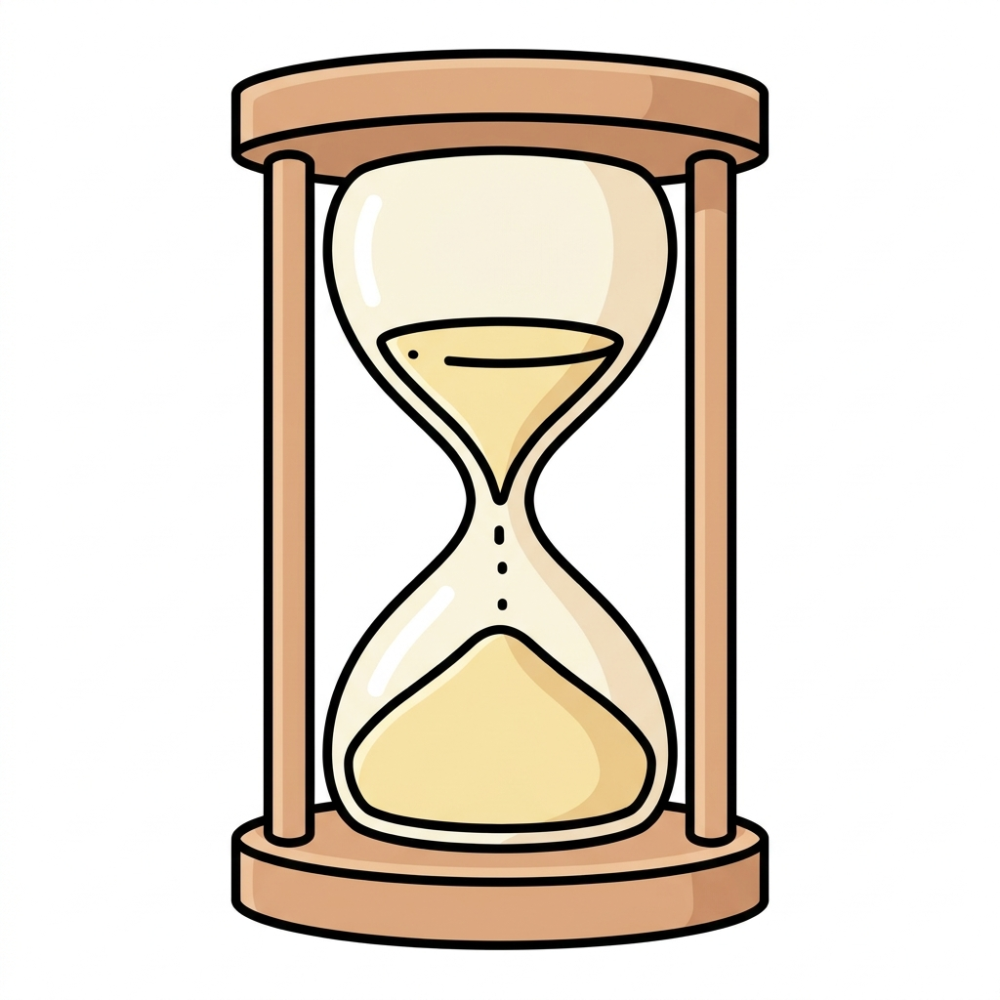

🎁 眠り貯金 発掘チェックリスト（発掘場所5つ＋窓口でそのまま出す携帯カード）

よく来たな。約束の物を渡す。
この1枚は、家の発掘リストと、切り取って財布に入れる「窓口カード」のセットだ。
使い方は簡単——家では発掘場所の□に丸をつけるだけ。窓口では、カードをそのまま読むだけ。むずかしい言葉は、覚えなくていい。
下のカードは線で切って、財布か薬の手帳のポケットへ。印刷は自分に1枚、実家の親御さんにも1枚の2枚——頼んだぞ。
🔍 発掘チェック——家の中の5か所
□ タンス・茶箪笥の引き出し（着物や封筒の下も）
□ 仏壇の引き出し（過去帳・数珠の箱の奥）
□ 金庫・手文庫の中（証書は1枚の紙のことがある）
□ 実家の押し入れの奥（木箱・缶・風呂敷包み）
□ 古い手さげ袋・カバン（銀行の粗品袋は貯金入れの定番）
> 📗 探す物の見た目：縦長でぱたんと開く古い通帳か、賞状のような1枚の紙（貯金証書）。表紙や題字に「郵便」の二文字（定額郵便貯金・定期郵便貯金・積立郵便貯金）があれば当たりだ。
> ふだん使いの通常貯金（ゆうちょの緑の通帳）は対象外——消えないから安心していい。
✂️ 窓口カード（切り取って財布へ）
┄┄┄┄┄┄┄┄┄┄┄┄┄┄┄┄┄┄┄┄┄┄┄┄┄┄┄┄┄┄
【ゆうちょ銀行・郵便局の貯金窓口で、このまま見せる】
> 「昔の郵便貯金が残っていないか、現存調査（貯金照会）をお願いします。」
> 「あわせて、住所の変更もお願いします。」
持ち物（3つ）
① 本人確認書類（運転免許証・マイナカードなど）
② 印鑑（届出印でなくてもよい）
③ 見つけた通帳・証書（なければ、なしでOK）
覚えておくこと
・調査は無料。通帳がなくても名前・生年月日・昔の住所で調べられる
・結果は後日郵送で届く（数週間かかることがある＝だから今週申し込む）
・「代わりに調べます」の電話・訪問は詐欺。本物の調べは窓口だけ・0円
┄┄┄┄┄┄┄┄┄┄┄┄┄┄┄┄┄┄┄┄┄┄┄┄┄┄┄┄┄┄
⏳ 覚えておく数字（この5つだけ）

| 数字 | 意味 |
|---|---|
| 2007年9月30日 | この日までに預けた定額・定期・積立が消える対象（ふだん使いの通常貯金は対象外） |
| 20年2か月 | 満期からのタイムリミット（20年で最後のお知らせ→2か月で権利消滅） |
| 0円 | 窓口の調べ（現存調査）の手数料。通帳がなくても頼める |
| 数週間 | 調査の回答までの目安——だから今週申し込む |
| 約202億円 | 2024年度に実際に消えた額（郵政管理・支援機構の公表ベース） |
👪 亡くなった親の通帳が出てきたら
権利が消える前なら、相続人が払い戻しを受けられる。戸籍などの必要書類は窓口が案内してくれるから、まずカードの一言＋「名義人は亡くなっています」と伝えればよい。
「満期を過ぎています」のお知らせハガキが届いたら、それはまだ間に合うの合図——捨てずにそのまま窓口へ。
🎁 おまけ（動画では話していない）——見つかった後の「お金とぜいきん」3つ
- 利子の税金は引かれた額で払い戻される——手取りが通帳の数字より少し減るのは正常だ。あわてなくていい。
- 亡くなった親の分は相続財産——払い戻したお金は相続税の計算に入る（多くの家は基礎控除の範囲内だが、申告中・申告予定の人は税理士か税務署に一言）。
- 家族の口座にまとめて移すのは待て——大きな額を動かすと贈与とみなされることがある。名義人本人（相続なら相続人）の口座で受け取るのが基本だ。
蓄えは、思い出の中でなくあなたの手の中にあってこそ役に立つ。
古い通帳は、今週さがして窓口へ。——探した日が、いちばん早い日だ。